Pickymon Brand Design
Graphic Design
Case Study
Pickymon is a social impact organization that aims to cultivate kids’ good habits about of food. We believe most children do not only reject foods they don’t know, but they also have to learn about healthy meals. Our general strategy is to try to make them familiar with balanced diets which include foods they don’t like, instead of pressuring children to eat different foods.
Help children to create interest in getting healthy eating habits.
 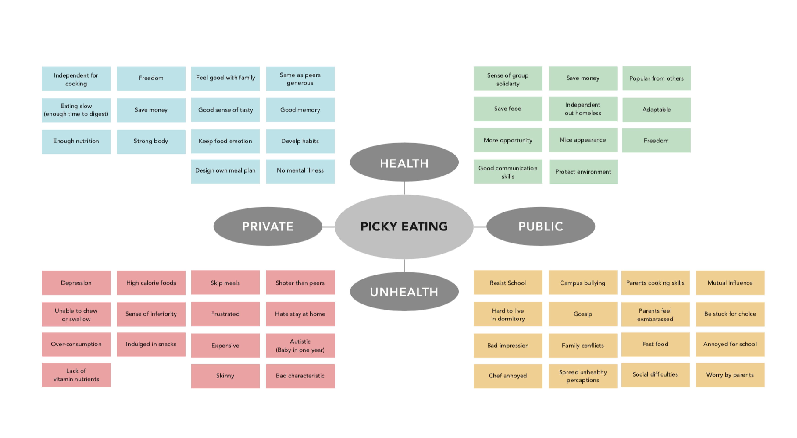
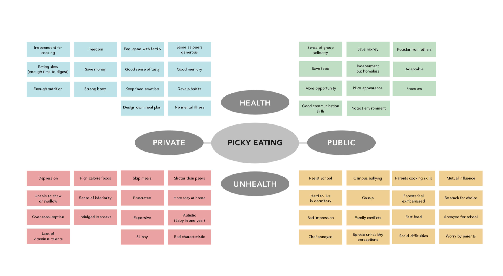
Audience
Children
Young Kids about 5-10 years old are the primary targets. This range of age kids would like to accept new things because they are so curiously. They like to play group games with friends. They start to meet a lot of peers and will be confused about their various appearance. Some kids are early to take care of their body changes because they are growing up so fast than the peers.
Parents and relatives
Parents and relatives are the secondary target. They take care of their children’s body health. They want to find an effective method to solve the problem of picky about food. They become the important role and influence their children a lot when the children are in that range of age.
Teachers
Teachers are the thirdly target. They are responsible to educate children the correct and wrong things. Children spend much time in school. The study in primary school is more important to children in their life. It’s easy to educate young kids to build a balanced diet on that time.
Idea
Kids are too young to understand the knowledge about nutrition. They select food only by their sense of taste and visual impression which they like or dislike. I want to empower kids to have fun in create habits of healthy food choices through interesting games.
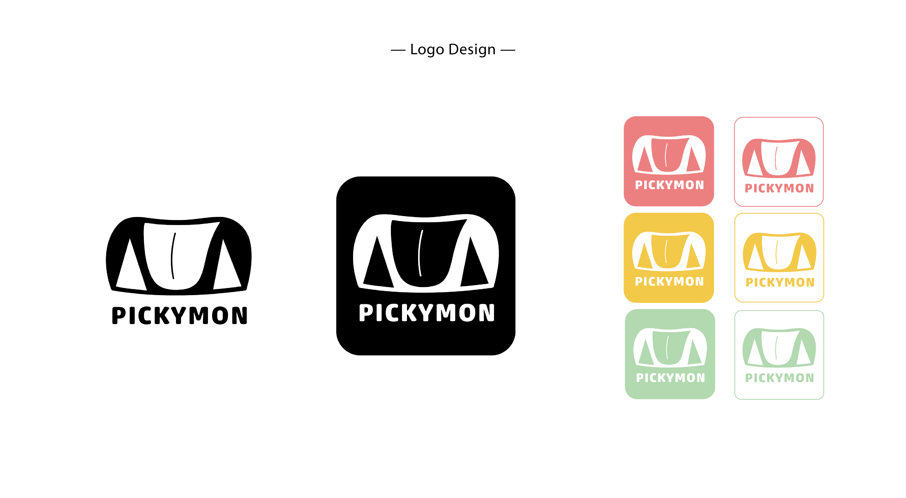 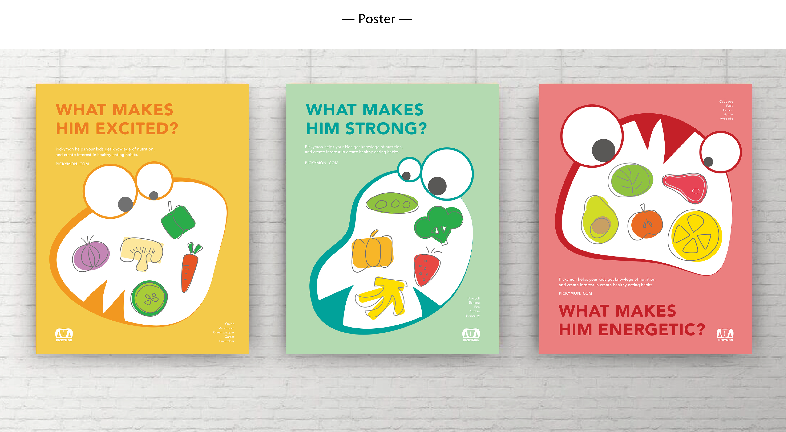 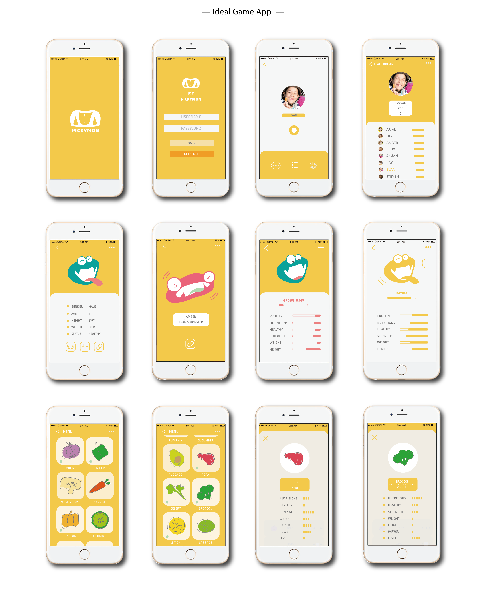 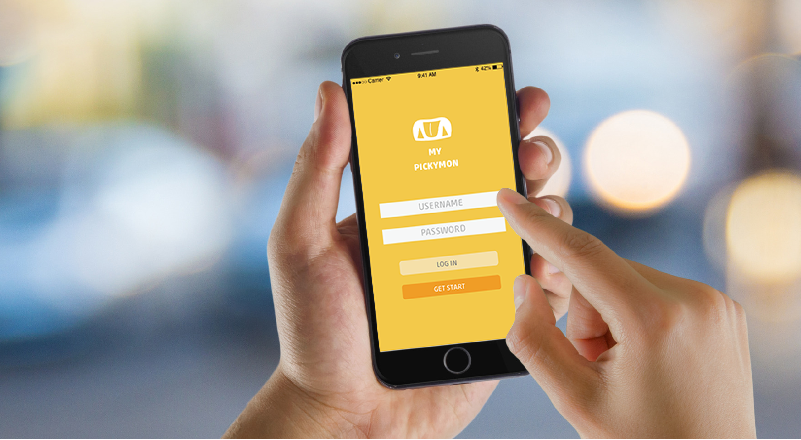
 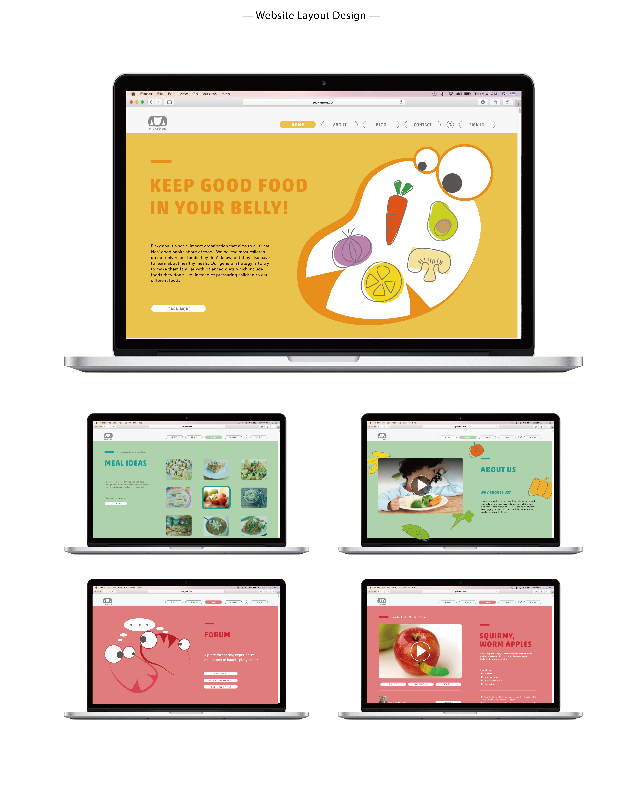
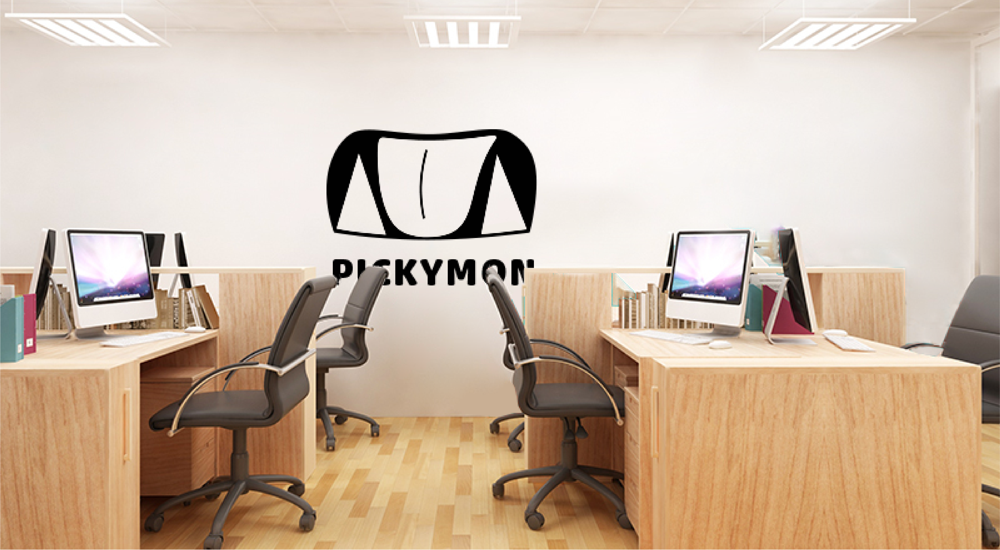
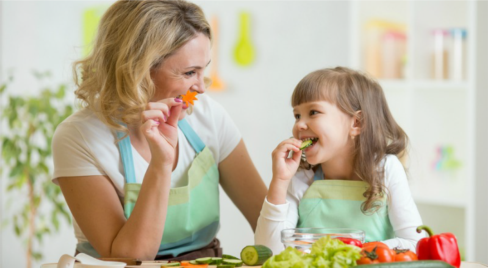
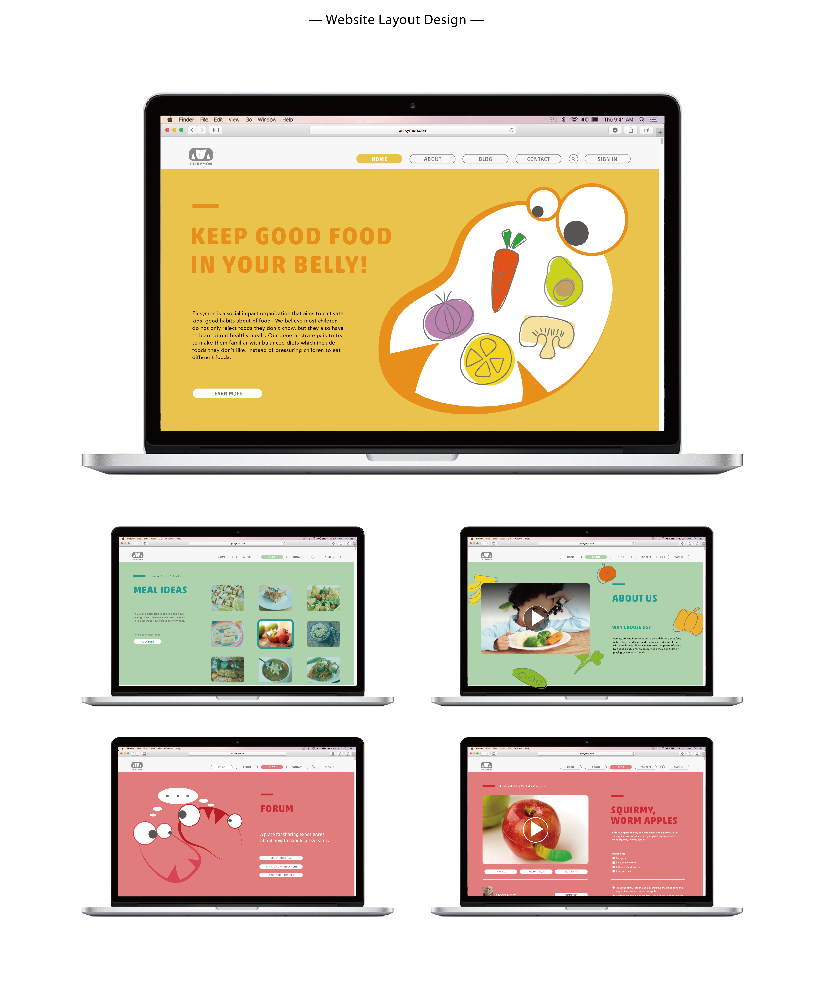
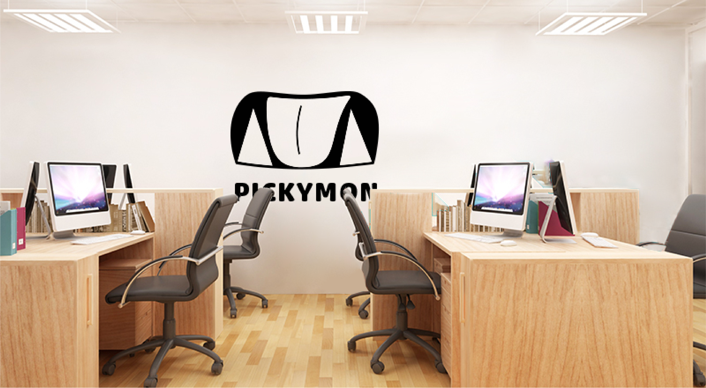
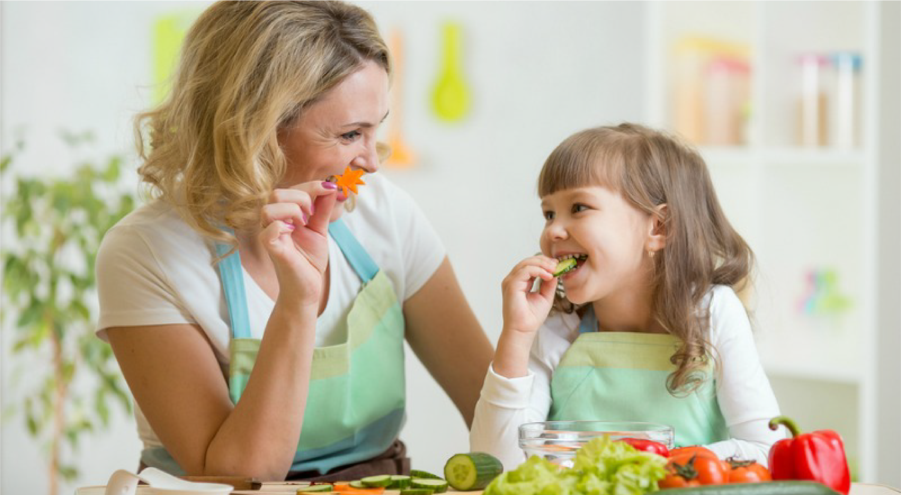